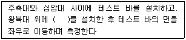
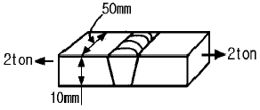
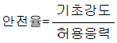
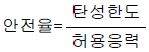
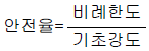
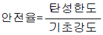
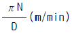
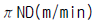
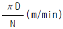
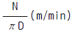

농업기계산업기사 (2004-05-23 기출문제)
1과목: 농업기계공작법
1. 절삭가공 중 바이트 날끝에 나타나는 구성인선(Built-up edge) 의 주기를 가장 올바르게 나타낸 것은 ?
- 발생 -> 성장 -> 분열 -> 탈락
- 발생 -> 분열 -> 성장 -> 탈락
- 발생 -> 분열 -> 탈락 -> 성장
- 발생 -> 탈락 -> 분열 -> 성장
(정답률: 74%)

2. 밀링 커터 중 각종 기어, 커터, 리머, 탭 등의 가공 뿐만 아니라 특수한 형상의 면(面)을 가공할 때에도 사용되는 커터는?
- 엔드 밀(end mill)
- 각형 커터(angular cutter)
- 총형 커터(formed cutter)
- 측면 커터(side milling cutter)
(정답률: 77%)
3. 용접봉의 기호가 E4301 일 경우 E 가 의미하는 것은?
- 전기 용접봉
- 용접 자세
- 피복제의 종류
- 용착금속의 최소 인장강도
(정답률: 76%)
4. 프레스 가공을 전단작업, 성형작업, 압축작업으로 분류할 때 다음 중 성형작업인 것은?
- 펀칭(punching)
- 시밍(seaming)
- 블랭킹(blanking
- 부로칭((broaching)
(정답률: 80%)
5. 금속을 소성가공할 때 열간 가공과 냉간 가공의 구별은 어떤 온도를 기준으로 하는가?
- 담금질 온도
- 변태 온도
- 재결정 온도
- 단조 온도
(정답률: 87%)
6. 나사가 박혀진 상태에서 머리부분이 부러졌을 경우 뺄 때 사용 공구로 가장 적합한 것은?
- 니퍼
- 엑스트렉터
- 탭 렌치
- 바이스 플라이어
(정답률: 96%)
7. 다음 중 금긋기 작업에 필요없는 공구는?
- 서어피스 게이지
- 하이트 게이지
- 평면대 및 앵글 플레이트
- 스크레이퍼
(정답률: 72%)
8. 길이 측정에서 온도에 대한 보정을 하고자 할 때 일반적으로 고려해야 할 사항이 아닌 것은?
- 측정기의 열팽창계수
- 측정시의 온도
- 측정물의 열팽창계수
- 측정시의 습도
(정답률: 93%)
9. 삼침법이란 나사의 무엇을 측정하는 방법인가?
- 피치
- 유효지름
- 골지름
- 바깥지름
(정답률: 57%)
10. 서로 반대방향으로 회전하는 두개의 롤러 사이에 재료를 삽입하고, 그 단면적을 축소시켜 길이 방향으로 늘리는 소성 가공법은?
- 압연가공
- 압출가공
- 인발가공
- 단조가공
(정답률: 74%)
11. 점화 플러그 및 단속기의 간격을 측정하고자 한다. 이 때 사용되는 공구로 다음 중 가장 적합한 것은?
- 마이크로 미터(micro meter)
- 버니어 캘리퍼스(vernier calipers)
- 피치 게이지(pitch gauge)
- 시크니스 게이지(thickness gauge)
(정답률: 70%)
12. 연삭에서 칩이나 숫돌입자가 숫돌의 기공에 끼어서 절삭 성능이 저하되는 현상을 무엇이라고 하는가?
- 드레싱(dressing)
- 투루잉(truing)
- 눈메움(loading)
- 무딤(glazing)
(정답률: 60%)
13. 다음 중 구성인선 발생을 억제하기 위한 방법으로 틀린 것은?
- 윤활성이 좋은 절삭유를 사용할 것
- 공구 윗면 경사각을 크게 할 것
- 절삭깊이를 작게 할 것
- 절삭속도를 작게 할 것
(정답률: 61%)
14. 칩이 절삭공구의 경사면 위을 미끄러질 때 마찰력에 의해 공구윗면에 오목하게 파지는 공구인선의 마모를 무엇이라고 하는가?
- 치핑(chipping)
- 플랭크 마모(flank wear)
- 구성인선(built-up edge)
- 크레이터 마모(crater wear)
(정답률: 63%)
15. 게이지블록 등을 가공하는 래핑작업의 장점이 아닌 것은?
- 가공면에 랩제가 잔류하기 쉽고 제품을 사용할 때 마멸을 촉진시킨다.
- 정밀도가 높은 제품을 얻을 수 있다.
- 가공면이 매끈한 거울면을 얻을 수 있다.
- 가공된 면은 내식성, 내마모성이 좋다.
(정답률: 84%)
16. 수퍼피니싱(super finishing)의 특징이 아닌 것은?
- 방향성이 없다.
- 가공면이 매끈하다.
- 가공에 따른 표면의 변질부가 아주 적다.
- 공작물의 전면에 균일한 단방향 운동을 준다.
(정답률: 70%)
17. 회전하는 상자에 숫돌입자, 공작액, 콤파운드 등을 함께 넣어 공작물이 입자와 충돌하는 동안에 표면의 요철 등을 제거하는 가공 방법은?
- 배럴(barrel)다듬질
- 숏 피닝(shot-peening)
- 버니싱 다듬질(burnishing)
- 롤러 다듬질
(정답률: 78%)
18. 드릴링 머신을 이용한 작업방법 중에서 가공 후 반드시 역회전을 해야 하는 작업방법은?
- 드릴링
- 보링
- 탭핑
- 리밍
(정답률: 78%)
19. 보통선반에서 양 센터의 중심이 맞지 않을 때 검사방법 설명에서 ( )안에 알맞는 측정기는?

- 스냅 게이지
- 다이얼 게이지
- 센타 게이지
- 포인트 마이크로메타
(정답률: 81%)
20. 주조작업에 사용되는 주물사의 구비조건으로 틀린 것은?
- 화학적 변화가 생기지 않을 것
- 내화성이 작을 것
- 통기성이 좋을 것
- 강도가 좋을 것
(정답률: 86%)
2과목: 농업기계요소
21. 두께 10mm, 폭 50mm인 강판을 그림과 같이 맞대기 이음하여 인장하중 2ton을 가했을 때 용접부에 생기는 인장응력은 몇 kgf/mm2 인가?

- 2
- 4
- 40
- 200
(정답률: 72%)
22. 원통 코일스프링에서 스프링 지수 C 의 일반적인 범위로 다음 중 가장 적합한 것은?
- 2∼7
- 4∼10
- 10∼16
- 14∼20
(정답률: 70%)
23. 스프링에 대한 다음 설명 중 올바른 것은?
- 토션 바는 스프링의 일종이다.
- 겹판 스프링의 모판은 가장 짧은 판이다.
- 서징은 스프링이 변동하중에 견디는 성질을 말한다.
- 압축코일 스프링의 처짐은 유효감김수에 반비례한다.
(정답률: 76%)
24. 길이가 100 mm인 코일 스프링에 스프링 상수가 8 kgf/mm, 6 kgf/mm인 2개의 스프링을 직렬로 연결하였을 때 등가스프링 상수는 몇 kgf/mm인가?
- 0.29
- 6.13
- 14.00
- 106.13
(정답률: 48%)
25. 평치차의 모듈 m = 6, 잇수 Z = 40 일 때 치차의 피치원 직경 D는 몇 mm인가?
- 140 mm
- 240 mm
- 340 mm
- 440 mm
(정답률: 80%)
26. 묻힘 키에 800kgf의 회전력이 작용하고 축 지름이 20㎜, 키의 전단응력이 400kgf/㎝2일 때 키의 길이가 40㎜이면 키의 폭은 몇 ㎜ 인가?
- 5
- 10
- 15
- 50
(정답률: 43%)
27. 워엄 기어(worm gear)에서 모듈이 2 이고 줄수가 3 일 때 워엄 휠의 잇수가 60 이라고 하면 감속비는 얼마인가?
- 1/10
- 1/15
- 1/20
- 1/30
(정답률: 63%)
28. 농용기관의 크랭크축과 플라이 휘일 고정용으로 쓰이며, 특히 작은 지름의 테이퍼 축에 사용되는 일명 우드러프(woodruff)키 라고 하는 키(key)는?
- 페더키
- 접선키
- 반달키
- 둥근키
(정답률: 73%)
29. 접촉면의 평균지름이 200mm이고, 마찰계수가 0.2인 단판마찰 클러치에서 500kg-mm 의 토크를 전달하려면 마찰판을 눌러야 하는 힘의 크기는 몇 kg인가?
- 2.5
- 5.0
- 7.5
- 12.5
(정답률: 21%)
30. 주로 힘의 전달용으로 쓰이는 나사로 프레스, 잭, 바이스 등에 사용되는 나사로 가장 적합한 것은?
- 삼각 나사
- 둥근 나사
- 사각 나사
- 사다리꼴 나사
(정답률: 63%)
31. 기계요소에 하중을 일정하게 작용시킬 때 고온에서 재료 내의 응력이 일정함에도 불구하고 시간의 경과와 더불어 변형량이 증대하는 현상을 무엇이라 하는가?
- 크리프(creep)
- 후크의 법칙(Hook's law)
- 피로 한도(fatigue limit)
- 응력 집중(stress concentration)
(정답률: 49%)
32. 농용 트랙터에서 특히 2축이 교차하고 있는 경우에 사용되는 커플링은?
- 올덤 커플링
- 플랜지 커플링
- 셀러 커플링
- 유니버셜 커플링
(정답률: 85%)
33. 레이디얼 볼 베어링의 호칭 번호가 63⑤일 때 베어링의 안지름은 몇 ㎜ 인가?
- 15 ㎜
- 20 ㎜
- 25 ㎜
- 63 ㎜
(정답률: 59%)
34. 치차의 물림상태에서 이의 뒷면에 설치하는 틈새(뒤틈)를 의미하는 용어는?
- 이끝틈새
- 백래시(Backlash)
- 전위량
- 언더컷(under-cut)
(정답률: 81%)
35. 다음 중 두 축이 교차할 때 사용하는 기어는?
- 평 기어(spur gear)
- 헬리컬 기어(helical gear)
- 베벨 기어(bevel gear)
- 내접 기어(internal gear)
(정답률: 73%)
36. 직선운동을 회전운동으로 변환시키는 기어는?
- 베벨 기어
- 헤리컬 기어
- 외접 기어
- 래크와 피니언
(정답률: 91%)
37. 리드가 5.2mm 인 2중 나사를 5 회전 시켰을 때의 이동 거리는?
- 5.2 mm
- 10.4 mm
- 20.8 mm
- 26 mm
(정답률: 66%)
38. 농용 트랙터 앞 차축에 사용되는 유성기어 장치에 대한 일반적인 특성 설명으로 틀린 것은?
- 변속이 원활하다.
- 수명이 비교적 짧다.
- 운전이 정숙하다.
- 구동장치 및 유체 자동 변속기에 쓰인다.
(정답률: 75%)
39. 블록 브레이크에서 블록이 드럼을 미는힘은 120kgf, 접촉 면적은 30cm2, 드럼의 원주 속도는 6m/s, 마찰계수는 0.2라 할 때 브레이크 용량은 약 몇 kgf/mm2 · m/s 인가?
- 4.8
- 0.5
- 0.48
- 0.⑤
(정답률: 27%)
40. 농업기계 재료의 일반적인 안전율을 나타낸 식으로 가장 적합한 것은?




(정답률: 84%)
3과목: 농업기계학
41. 흙을 미리 절삭하여 보습의 절삭작용을 도와주는 기능을 하는 것은?
- 지측판
- 콜터
- 앞쟁기
- 흡인
(정답률: 88%)
42. 플라우의 이체 구성요소가 아닌 것은?
- 발토판
- 지측판
- 요동판
- 보습
(정답률: 75%)
43. 삼끈이나 비닐 테이프 등에 종자를 일정 간격으로 부착한 후 끈이나 테이프를 직접 포장에 묻어 파종하는 씨드 테이프(seed tape) 파종에 가장 적합한 것은?
- 감자 파종기
- 콩 파종기
- 채소 파종기
- 옥수수 파종기
(정답률: 74%)
44. 다음 중 일반적인 탈곡기의 급동에 있는 급치의 종류가 아닌 것은?
- 절삭치
- 정소치
- 병치
- 보강치
(정답률: 69%)
45. 고속기류를 이용하여 유기분사에 의해 약액을 기계적으로 분산 미립화시키는 방제기는 어떤 것인가?
- 송풍기
- 미스트기
- 살수기
- 동력분무기
(정답률: 76%)
46. 동력 분무기의 공기실의 주역할 설명으로 다음 중 가장 적합한 것은?
- 노즐의 분사 압력을 높여준다.
- 유체속의 기포를 제거한다.
- 노즐에서 나가는 약액의 압력을 일정하게 유지한다.
- 피스톤이 후진하여 압력이 낮아지면 약액을 흡입한다
(정답률: 79%)
47. 현미기에서 투입된 벼가 100 kg, 탈부되지 않은 벼의 무게가 15 kg 이라면 탈부율은 얼마인가?
- 15.0 %
- 17.6 %
- 50.0 %
- 85.0 %
(정답률: 67%)
48. 시비기에서 입상비료의 살포에는 원심력을 이용한 원심식 시비기가 쓰이고 있는데 일반적으로 무엇이라 하는가?
- 퇴비 살포기
- 분말 시비기
- 브로드 캐스터
- 살포액비액
(정답률: 68%)
49. 콤바인의 구조 중 탈곡부에 작물의 길이에 따라 공급깊이를 적절한 상태로 유지 시켜주는 것은?
- 공급깊이 장치
- 픽업 장치
- 크랭크 핑거
- 피드 체인
(정답률: 77%)
50. 목초를 원통으로 말아서 야외에 저장하므로써 목초 수확에 소요되는 동력을 줄이고자 만든 기계는?
- 모우어(Mower)
- 라운드 베일러
- 레이크(Rake)
- 드레셔(Thresher)
(정답률: 73%)
51. 치묘를 이앙하고 있던 이앙기에 중성묘를 이앙하려 한다. 이앙기에서 조절하지 않아도 되는 것은?
- 가로 이송량
- 플로우트의 위치
- 세로 이송량
- 묘탑재판 경사도
(정답률: 72%)
52. 로터리 호우는 다음 중 어떤 원리를 이용한 쇄토기인가?
- 절단
- 관입
- 충격
- 압쇄
(정답률: 51%)
53. 다음 중 동력분무기의 분무 상태가 나쁘고 분무입자가 큰 경우의 원인이 아닌 것은 ?
- 노즐구멍이 마모되어 커졌다.
- 노즐의 구멍수가 적다.
- 압력이 떨어졌다.
- 흡입량이 적다.
(정답률: 87%)
54. 다음 중 조파기의 주요 장치가 아닌 것은?
- 배종 장치
- 쇄토 장치
- 복토 장치
- 구절(골타기)장치
(정답률: 46%)
55. 동력 경운기 로터리에 배토기를 장착하고 작업할 때 가장 적합한 로터리날 배열법은?
- 내외향 배열법
- 외향 배열법
- 균등 배열법
- 내향 배열법
(정답률: 57%)
56. 자동 탈곡기의 유효 주속도가 V(m/min), 급동의 회전수는 N(rpm), 급동의 유효지름이 D(m)일 때, 유효 주속도에 대한 관계식은?




(정답률: 52%)
57. 어떤 토양에서 플라우의 비저항이 0.4kgf/㎝2으로 측정되였을 때, 경심이 20㎝, 경폭이 40㎝로 작업할 경우 진행 방향의 견인저항(분력)은 몇 kgf 인가?
- 120
- 160
- 320
- 720
(정답률: 43%)
58. 원심펌프를 구성하는 주요부분으로 작동 중 물을 흡입할 때 에는 열리고 운전이 정지될 때는 역류하는 것을 방지하는 역할을 하는 부분은?
- 임펠러(impeller)
- 안내날개(guide vane)
- 케이싱(casing)
- 풋 밸브(foot valve)
(정답률: 87%)
59. 동력살분기에서 난기운전을 실시하는 가장 주된 이유는?
- 기계의 작동을 원활하게 하기 위해서
- 살포 농약을 균일하게 하기 위해서
- 기계 내의 오물을 청소하기 위해서
- 연료를 적절히 조절하기 위해서
(정답률: 86%)
60. 스프링 클러의 노즐 구경이 4㎜ 이고 압력이 3㎏f/㎝2, 풍속이 2m/sec일 때 노즐 간격은 살수 지름의 몇 %로 하는 것이 가장 적합한가?
- 30%
- 50%
- 60%
- 75%
(정답률: 42%)
4과목: 농업동력학
61. 전동기의 고정자 극수가 4개이고, 전원 주파수가 60㎐인 유도 전동기의 동기속도는?
- 3600 rpm
- 2400 rpm
- 1800 rpm
- 480 rpm
(정답률: 63%)
62. 트랙터의 앞바퀴를 위에서 내려다 볼 때 앞쪽이 안으로 들어가 있는 것을 무엇이라고 하는가?
- 캠버각
- 캐스터각
- 토우인
- 킹핀 경사각
(정답률: 72%)
63. 다음 중 교류 전동기가 아닌 것은?
- 삼상 유도 전동기
- 단상 유도전동기
- 직권 전동기
- 농형 전동기
(정답률: 54%)
64. 장궤형 트랙터의 장점이 아닌 것은?
- 접지 면적이 넓어 연약 지반에서도 작업이 가능하다.
- 무게 중심이 낮아 경사지 작업이 편리하다.
- 기동성이 좋고 정비가 편리하다.
- 회전 반경이 작다.
(정답률: 34%)
65. 트랙터의 보조 차륜 중 지면은 단단하지만 미끄럽거나 눈이 쌓여 있는 경우에 한정하여 사용하는 것은?
- 타이어 거들
- 스트레이크 차륜
- 플로트 차륜
- 디스크 차륜
(정답률: 58%)
66. 트랙터의 선회 및 곡진(曲進)을 용이하게 하기 위해서 좌우 구동륜의 회전속도를 서로 다르게 해주는 장치는?
- 차동장치
- 최종 구동장치
- 변속기
- 클러치
(정답률: 94%)
67. 가솔린 기관의 기화기 장치 중 혼합기를 농후하게 하여 한랭시 시동을 쉽게 하기 위한 것은?
- 초크밸브
- 스로틀 밸브
- 벤츄리
- 이코노마이저 계통
(정답률: 81%)
68. 농용 트랙터 구동륜의 타이어에 미끄럼 방지를 위하여 나있는 돌기부분을 의미하는 것은?
- 스포크(spoke)
- 링(ring)
- 드래드(thread)
- 보스(boss)
(정답률: 71%)
69. 내연기관에서 오토 사이클(otto cycle)은 다음 중 어느 사이클에 속하는가?
- 정압 사이클
- 정적 사이클
- 복합 사이클
- 정온 사이클
(정답률: 63%)
70. 4 실린더 기관의 점화순서가 1 → 2 → 4 → 3번 실린더의 순서일 경우 제1실린더가 폭발행정을 할 때 제3실린더는 어떤 행정을 하는가?
- 흡입행정
- 배기행정
- 팽창행정
- 압축행정
(정답률: 53%)
71. 피스톤의 왕복운동을 크랭크 축의 회전운동으로 바꾸어 주는 부품은 무엇이라 하는가?
- 피스톤 핀
- 피스톤 링
- 커넥팅 로드
- 플라이 휠
(정답률: 75%)
72. 충전회로에서 레귤레이터(Regulator)가 하는 가장 중요한 일은?
- 축전지에 흐르는 전압과 전류를 조절한다.
- 기관의 동력으로 부터 교류전류를 발생시킨다.
- 교류를 직류로 바꾸어 준다.
- 직류를 교류로 바꾸어 준다.
(정답률: 76%)
73. PTO축이란 다음 중 어느 장치를 의미하는가?
- 변속장치
- 동력취출장치
- 차동장치
- 조향장치
(정답률: 83%)
74. 다음 중 가솔린 기관의 연료로서 구비해야 할 조건이 아닌 것은?
- 발열량이 클 것
- 휘발성이 좋을 것
- 옥탄가가 높을 것
- 세탄가가 높을 것
(정답률: 72%)
75. 트랙터의 차륜이 일정한 회전을 하는 사이에 무부하시의 진행거리가 100m 이고, 부하시에 진행거리는 95m 였다면 슬립율은 몇 % 인가?
- 5
- 9.5
- 10
- 5.26
(정답률: 68%)
76. 자중이 1150㎏f인 장궤형 트랙터의 트랙 접지부분의 길이가 각각 107㎝이고 트랙의 폭이 33㎝일 때 이 트랙터의 접지압은 약 몇 ㎏f/㎝2 인가?
- 0.08
- 0.16
- 0.33
- 0.67
(정답률: 36%)
77. 트랙터의 견인력이 300㎏f이고, 주행속도가 1.5m/s일 때, 견인 동력은 몇 PS 인가?
- 3
- 6
- 9
- 12
(정답률: 46%)
78. 농업기계 축전지의 충전 준비작업에 대한 설명으로 틀린 것은?
- 각 셀의 전해액 액량을 점검하여 부족시는 증류수를 보충한다.
- 충전기의 사양 전원전압이 AC 100V 또는 200V인지를 확인한다.
- 오염된 축전지는 비눗물로 깨끗이 닦고 압축공기로 수분을 건조한다.
- 충전전에 밴트 플러그를 모두 닫아 놓아야 한다.
(정답률: 70%)
79. 트랙터의 총중량에 대한 최대견인력의 비율을 무엇이라고 하는가?
- 점착계수
- 견인계수
- 견인효율
- 운동저항계수
(정답률: 36%)
80. 디젤기관의 노크 방지책이 아닌 것은?
- 압축비를 높인다.
- 흡기압력을 높인다.
- 연료의 착화점을 낮게 한다.
- 실린더 벽의 온도를 낮게 한다.
(정답률: 49%)
바이트가 절삭면과 마찰하면서 열이 발생하면, 절삭면과 바이트 사이에 재료가 끼어붙어 구성인선이 형성된다. 이후 구성인선은 바이트의 성장과 함께 분열하면서 크기가 커지다가, 마지막으로 탈락하게 된다. 이 주기는 바이트와 절삭면의 재료와 마찰 조건에 따라 달라질 수 있다.